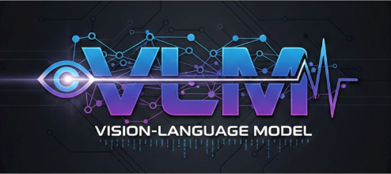
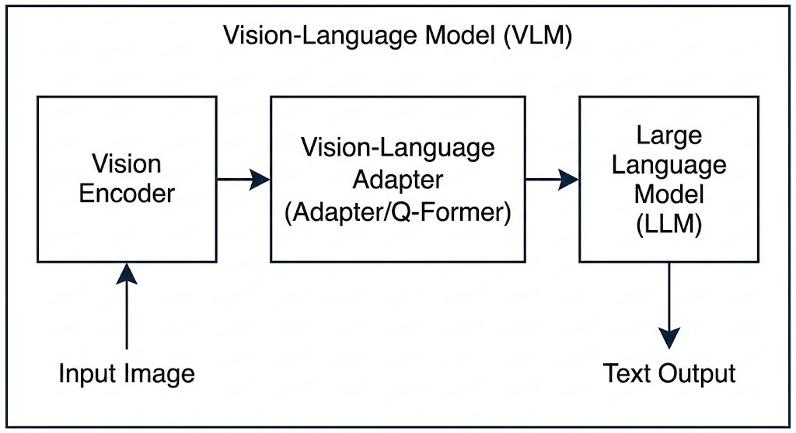
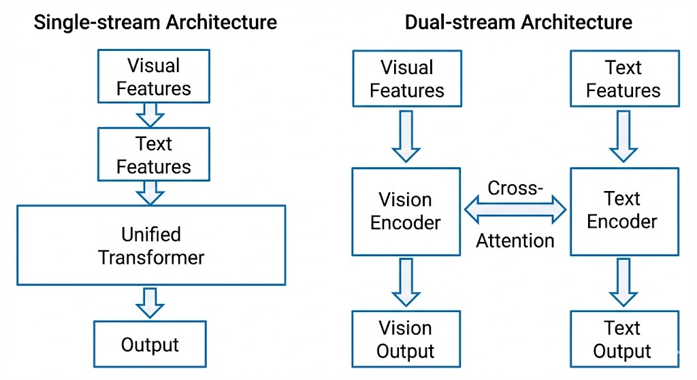
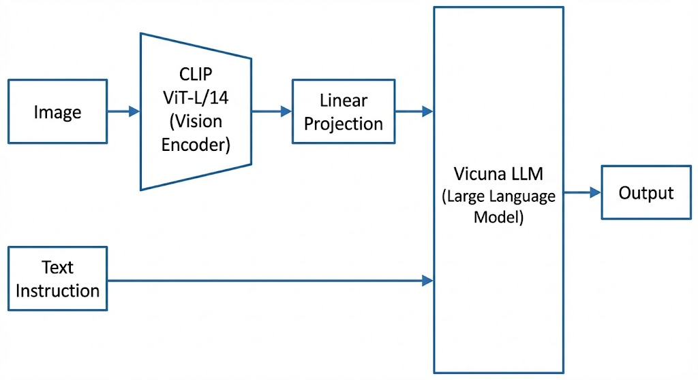
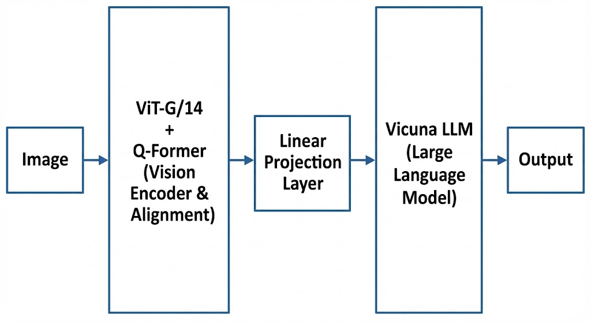

一文了解VLM

VLM（Vision-Language Model）: 视觉语言大模型
参考资料
一文了解 VLM
视觉语言模型（Vision-Language Model，VLM）是人工智能领域最激动人心的进展之一。它让机器能够同时”看懂”图像和”理解”语言，开启了人机交互的全新范式。本文将带你从零开始，全面了解 VLM 的原理、发展与未来。
一、什么是视觉语言模型？
1.1 通俗理解：给 AI 装上”眼睛”
想象一下，如果你能和一台机器这样对话：
你：“请描述这张图片里有什么？”
AI：“图中有一只金毛犬在草地上奔跑，背景是蓝天白云，远处还有几棵树。”
或者更复杂一点：
你：“这张图表显示了什么趋势？”
AI：“这张柱状图显示了 2020-2024 年公司营收的逐年增长趋势，其中 2023 年增长率最高，达到 35%。”
这就是视觉语言模型（VLM）的能力——它能够同时处理视觉信息（图像、视频）和语言信息（文本），并在两者之间建立联系。
根据 IBM 的定义，视觉语言模型是将计算机视觉（CV）与自然语言处理（NLP）功能融合到统一系统中的多模态模型。简单来说，VLM = 视觉理解 + 语言理解。
1.2 技术定义：多模态 AI 的集大成者
从技术角度看，VLM（也常被称为 Large Vision-Language Models，LVLMs）通常由三个核心组件构成：

三个核心组件的作用：
视觉编码器（Visual Encoder）：负责从图像中提取视觉特征。通常使用 Vision Transformer（ViT）架构，如 CLIP-ViT、EVA-CLIP 等。它将输入的图像转换为模型可以理解的”视觉 token”序列。
视觉-语言适配器（Vision-Language Adapter）：作为视觉和语言之间的”桥梁”，将视觉特征映射到大语言模型的嵌入空间。常见设计包括：
- 单层线性投影（如 LLaVA）
- 带非线性的 MLP（如 MiniGPT-4）
- Q-Former 架构（如 BLIP-2）
大语言模型（LLM）：负责理解视觉和文本信息，并生成自然语言响应。通常使用预训练的大语言模型，如 LLaMA、Vicuna、Qwen 等。
1.3 VLM 与纯视觉模型、纯语言模型的区别
| 模型类型 | 输入 | 输出 | 典型任务 | 代表模型 |
|---|---|---|---|---|
| 纯视觉模型 | 图像 | 类别/检测框 | 图像分类、目标检测 | ResNet、ViT、YOLO |
| 纯语言模型 | 文本 | 文本 | 文本生成、问答 | GPT、LLaMA、Qwen |
| 视觉语言模型 | 图像+文本 | 文本 | 图像描述、视觉问答、图文检索 | CLIP、BLIP、LLaVA |
VLM 的核心优势在于跨模态理解能力：它不仅能识别图像中的物体，还能理解物体之间的关系、场景的语义信息，并用自然语言表达出来。
二、VLM 的发展历程：从萌芽到爆发
2.1 早期探索（2019-2020）：双塔结构的兴起
VLM 的发展可以追溯到 2019-2020 年，这一时期的研究主要采用双塔架构（Dual-stream Architecture），即分别用独立的编码器处理视觉和语言信息，然后在共享空间中对齐。
代表性工作：
- ViLBERT（2019）：将 BERT 架构扩展到视觉-语言领域，采用双流架构分别处理图像和文本
- VisualBERT（2020）：首个图像-文本预训练模型，使用 Faster R-CNN 提取视觉特征
- UNITER（2020）：大规模视觉-语言预训练，在多个下游任务上取得 SOTA
这些早期模型的共同特点是： - 使用目标检测器（如 Faster R-CNN）提取区域特征 - 采用单流或双流 Transformer 进行跨模态融合 - 预训练任务主要包括掩码语言建模（MLM）和图像-文本匹配（ITM）
2.2 CLIP 时代（2021）：对比学习的革命
2021 年，OpenAI 发布了 CLIP（Contrastive Language-Image Pre-training），这是 VLM 发展史上的里程碑事件。
CLIP 的核心创新：
- 对比学习范式：通过最大化匹配图文对的相似度、最小化不匹配图文对的相似度来学习跨模态表示
- 双塔架构：图像编码器和文本编码器独立工作，输出映射到同一语义空间
- 大规模数据：使用 4 亿个互联网收集的图像-文本对进行训练

CLIP 的革命性意义在于： - 零样本能力：无需微调即可应用于下游任务 - 开放词汇：不受预定义类别限制，可识别任意概念 - 强大的迁移能力：作为视觉编码器广泛应用于后续 VLM
同期，Google 发布了 ALIGN，采用类似的对比学习思路，但使用 18 亿个噪声更大的图文对进行训练，进一步验证了规模的重要性。
2.3 统一框架（2022）：理解与生成的一体化
2022 年，Salesforce 发布了 BLIP（Bootstrapping Language-Image Pre-training），提出了统一的视觉-语言理解与生成框架。
BLIP 的核心贡献：
- MED（Multimodal Mixture of Encoder-Decoder）架构：
- 单模态编码器：分别编码图像和文本
- 图像条件文本编码器：融合视觉信息进行理解
- 图像条件文本解码器：生成图像描述
- CapFilt（Captioning and Filtering）：
- 使用”生成器+过滤器”策略清洗网络数据
- 生成器（Captioner）为网络图像生成合成描述
- 过滤器（Filter）去除噪声描述
BLIP 在图像-文本检索、图像描述、视觉问答等任务上取得了 SOTA 性能，并展示了强大的零样本迁移能力。
2.4 大模型时代（2023）：LLM 赋能的视觉助手
2023 年是 VLM 的爆发之年，核心趋势是将预训练的大语言模型（LLM）与视觉能力相结合。
代表性模型：
| 模型 | 机构 | 核心特点 | 发布时间 |
|---|---|---|---|
| BLIP-2 | Salesforce | 冻结视觉编码器和 LLM，使用 Q-Former 桥接 | 2023.01 |
| LLaVA | 威斯康星大学 | 视觉指令微调，端到端训练 | 2023.04 |
| MiniGPT-4 | KAUST | 单投影层对齐，两阶段训练 | 2023.04 |
| Qwen-VL | 阿里巴巴 | 多语言、多图像、细粒度理解 | 2023.08 |
这一时期的共同特点：
- 冻结预训练模型：视觉编码器和 LLM 保持冻结，仅训练适配器，大幅降低训练成本
- 指令微调：使用指令数据对模型进行微调，提升指令跟随能力
- 端到端训练：从视觉输入直接生成文本输出，简化流程
以 LLaVA 为例，它首次将视觉指令微调（Visual Instruction Tuning）引入 VLM： - 使用 GPT-4 生成多模态指令跟随数据 - 将 CLIP 视觉编码器与 Vicuna LLM 连接 - 端到端微调，实现强大的多模态对话能力
BLIP-2 则提出了两阶段训练策略： - 第一阶段：使用冻结的视觉编码器训练 Q-Former 进行视觉-语言表示学习 - 第二阶段：将 Q-Former 连接到冻结的 LLM，进行视觉到语言的生成学习
2.5 最新进展（2024-2025）：多模态原生大模型
进入 2024-2025 年，VLM 朝着更大规模、更强能力、更多模态的方向发展。
主要趋势：
- 模型规模扩大：从 7B 参数扩展到 70B+ 参数
- 分辨率提升：支持更高分辨率输入（如 448×448、896×896）
- 多模态扩展：从图像-文本扩展到视频、音频等多模态
- 原生多模态架构：不再简单拼接单模态模型，而是从头设计多模态架构
以 Qwen2-VL 为例，它引入了： - 原生动态分辨率支持，可处理任意分辨率的图像 - 多模态旋转位置编码（M-RoPE），统一处理图像和视频 - 强大的文档理解和 OCR 能力
三、VLM 的核心技术原理
3.1 模型架构：单流 vs 双流
根据 VLP 综述，VLM 的架构可以从两个维度进行分类：
3.1.1 从多模态融合角度：单流 vs 双流
单流架构（Single-stream）： - 将视觉特征和文本特征拼接后输入单个 Transformer - 使用统一的自注意力机制进行融合 - 参数效率更高，但模态间干扰较大 - 代表：VisualBERT、UNITER
双流架构（Dual-stream）： - 视觉和文本分别输入独立的 Transformer - 通过交叉注意力（Cross-Attention）实现跨模态交互 - 模态内信息保留更好，但参数量更大 - 代表：CLIP、BLIP-2

3.1.2 从整体设计角度：Encoder-only vs Encoder-Decoder
Encoder-only： - 仅使用编码器提取跨模态表示 - 适用于理解任务（如图文检索、视觉问答） - 代表：CLIP、ALBEF
Encoder-Decoder： - 编码器提取特征，解码器生成文本 - 适用于生成任务（如图像描述） - 代表：BLIP、OFA
3.2 预训练目标
VLM 的预训练目标是学习视觉和语言之间的语义对应关系。根据 VLP 综述，主要预训练目标可以分为四类：
3.2.1 补全类（Completion）
掩码语言建模（MLM）： - 随机掩码文本中的部分 token，让模型根据视觉信息和上下文预测 - 公式：\(\mathcal{L}_{MLM} = -\mathbb{E}_{(v,w)\sim D} \log P(w_m|w_{\setminus m}, v)\) - 应用：VisualBERT、UNITER
掩码视觉建模（MVM）： - 随机掩码部分图像区域，让模型根据文本和其他视觉信息预测 - 变体：掩码特征回归、掩码特征分类 - 应用：UNITER、OSCAR
3.2.2 匹配类（Matching）
图像-文本对比学习（ITC）： - 拉近匹配图文对的特征距离，推远不匹配图文对 - 使用 InfoNCE 损失函数 - 公式：\(\mathcal{L}_{ITC} = -\frac{1}{2}\mathbb{E}_{(I,T)\sim D}[CE(y^{v2t}, p^{v2t}(I)) + CE(y^{t2v}, p^{t2v}(T))]\) - 应用：CLIP、ALBEF、BLIP
图像-文本匹配（ITM）： - 二分类任务，判断图文对是否匹配 - 使用难负样本挖掘策略 - 应用：ALBEF、BLIP
3.2.3 时序类（Temporal）
帧序建模（FOM）： - 打乱视频帧顺序，让模型预测正确顺序 - 用于视频-语言预训练 - 应用：VideoBERT
3.2.4 特定类型
视觉问答（VQA）： - 将 VQA 作为预训练任务 - 分类或生成式答案预测
视觉描述（VC）： - 自回归生成图像描述 - 使用语言建模损失
3.3 视觉特征提取的演进
VLM 中视觉特征提取方式经历了三代演进：
3.3.1 第一代：基于目标检测的区域特征（OD-RFs）
- 使用预训练的目标检测器（如 Faster R-CNN）提取区域特征
- 每个区域特征为 2048 维向量，附带边界框坐标
- 优点：语义明确，包含物体级信息
- 缺点：计算开销大，只能提取有限数量的区域
- 代表：VisualBERT、UNITER、OSCAR
3.3.2 第二代：基于 CNN 的网格特征（CNN-GFs）
- 使用 CNN（如 ResNet）提取网格特征
- 可以端到端训练
- 优点：计算效率更高
- 缺点：语义信息不如区域特征明确
- 代表：PixelBERT
3.3.3 第三代：基于 ViT 的 Patch 特征（ViT-PFs）
- 使用 Vision Transformer 将图像分割为 patch 序列
- 每个 patch 作为一个 token
- 优点：与 NLP 的 token 形式统一，便于跨模态融合
- 代表：CLIP、BLIP、LLaVA

3.4 训练策略：两阶段 vs 三阶段
现代 VLM 通常采用多阶段训练策略：
3.4.1 两阶段训练（以 BLIP-2 为例）
第一阶段：视觉-语言表示学习 - 冻结视觉编码器 - 训练 Q-Former 提取与文本最相关的视觉特征 - 使用 ITC、ITM、ITG 三个目标
第二阶段：视觉到语言生成学习 - 将 Q-Former 连接到冻结的 LLM - 训练 Q-Former 使输出可被 LLM 理解 - 使用语言建模损失
3.4.2 三阶段训练（以 Qwen-VL 为例）
第一阶段：预训练 - 冻结 LLM，训练视觉编码器和适配器 - 使用大规模图文对数据（14 亿对） - 低分辨率输入（224×224）
第二阶段：多任务预训练 - 解锁 LLM，端到端训练 - 引入高质量细粒度数据（VQA、OCR、Grounding 等） - 高分辨率输入（448×448）
第三阶段：监督微调 - 冻结视觉编码器，微调 LLM 和适配器 - 使用指令跟随数据 - 增强对话能力和指令理解能力
四、主流 VLM 模型详解
4.1 CLIP：跨模态对比学习的开创者
基本信息： - 发布时间：2021 年 2 月 - 机构：OpenAI - 参数量：约 4 亿参数（最大版本） - 训练数据：4 亿图文对
核心架构：

# CLIP 伪代码
image_features = image_encoder(images) # ViT 或 ResNet
text_features = text_encoder(texts) # Transformer
# 归一化
image_features = normalize(image_features)
text_features = normalize(text_features)
# 计算相似度
similarity = image_features @ text_features.T
# 对比损失
loss = cross_entropy_loss(similarity, labels)主要能力： - 零样本图像分类 - 图像-文本检索 - 作为视觉编码器用于下游任务
局限性： - 仅支持理解任务，不支持生成任务 - 对细粒度视觉理解能力有限
4.2 BLIP/BLIP-2：统一理解与生成
4.2.1 BLIP
核心创新： - MED（多模态编解码混合）架构 - CapFilt 数据自举方法
CapFilt 流程：

4.2.2 BLIP-2
核心创新： - Q-Former 架构：轻量级的查询 Transformer - 两阶段训练策略 - 可插拔的冻结模型设计
Q-Former 架构：

性能表现： - 在 VQAv2 上超过 Flamingo-80B 8.7%，但可训练参数仅为其 1/54
4.3 LLaVA：视觉指令微调的先锋
基本信息： - 发布时间：2023 年 4 月 - 机构：威斯康星大学麦迪逊分校 - 核心思想：将指令微调从 NLP 扩展到视觉-语言领域
数据生成： - 使用 GPT-4 生成多模态指令跟随数据 - 三种类型：对话、详细描述、复杂推理 - 共 158K 样本
架构：

两阶段训练：
- 特征对齐预训练：
- 冻结视觉编码器和 LLM
- 仅训练投影矩阵
- 使用 595K 图文对
- 端到端微调：
- 冻结视觉编码器
- 微调投影层和 LLM
- 使用 158K 指令数据
性能： - 在 Science QA 上与 GPT-4 结合达到 92.53% 准确率（SOTA）
4.4 MiniGPT-4：极简设计的强大能力
基本信息： - 发布时间：2023 年 4 月 - 机构：阿卜杜拉国王科技大学（KAUST）
架构：

核心发现： - 仅训练一个线性投影层即可有效对齐视觉和语言 - 训练仅需 4 张 A100 GPU，约 10 小时
两阶段训练：
- 第一阶段：使用大规模图文对（500 万对）进行预训练
- 第二阶段：使用 3500 个高质量详细描述进行微调
涌现能力： - 详细图像描述 - 网站代码生成 - 诗歌创作 - 食谱生成 - 幽默解释
4.5 Qwen-VL：多语言多图像的通用模型
基本信息： - 发布时间：2023 年 8 月 - 机构：阿里巴巴 - 基础模型：Qwen-7B
核心特点：
- 多语言支持：
- 支持中英文双语
- 训练数据中 77.3% 英文，22.7% 中文
- 多图像输入：
- 支持任意交错的图文数据
- 可比较、理解多张图像
- 细粒度理解：
- 高分辨率输入（448×448）
- 支持文本阅读（OCR）
- 支持视觉定位（Grounding）
三阶段训练：
| 阶段 | 数据 | 训练策略 | 分辨率 |
|---|---|---|---|
| 预训练 | 14 亿图文对 | 冻结 LLM，训练视觉模块 | 224×224 |
| 多任务预训练 | 7 个任务（76.8M 样本） | 端到端训练 | 448×448 |
| 监督微调 | 350K 指令数据 | 冻结视觉，微调 LLM | 448×448 |
性能表现： - Flickr30K 图像描述：85.8 CIDEr（零样本 SOTA） - VQAv2：79.5% 准确率 - RefCOCO 定位：88.55% 准确率
五、VLM 的应用场景
5.1 图像描述与视觉问答
图像描述（Image Captioning）： - 为图像生成自然语言描述 - 应用：辅助视障人士、图像检索、内容审核
视觉问答（Visual Question Answering, VQA）： - 根据图像内容回答自然语言问题 - 应用：智能客服、教育辅助、医疗影像分析
5.2 图文检索
图像-文本检索： - 文本到图像检索：根据文本描述找到匹配图像 - 图像到文本检索：根据图像找到相关文本描述 - 应用：搜索引擎、电商平台、内容推荐
5.3 文档理解
OCR 与文档分析： - 文本阅读：识别图像中的文字内容 - 表格理解：解析表格结构和内容 - 图表分析：理解图表中的数据和趋势 - 应用：金融报告分析、合同审查、发票处理
5.4 视觉定位与指代表达
视觉定位（Visual Grounding）： - 根据文本描述定位图像中的物体 - 输出边界框坐标
指代表达理解（Referring Expression Comprehension）： - 理解如”左边的红衣服女孩”这样的描述 - 应用：机器人导航、图像编辑、交互式 AI
5.5 创意生成
图像到代码： - 将手绘草图转换为 HTML/CSS 代码 - 应用：前端开发、原型设计
图像到故事/诗歌： - 根据图像创作故事或诗歌 - 应用：内容创作、教育娱乐
六、幻觉问题：VLM 的阿喀琉斯之踵
6.1 什么是 VLM 幻觉？
根据《视觉语言大模型的幻觉综述》，VLM 幻觉是指模型生成的文本响应表现出对图像内容的错误感知。
幻觉示例：
| 图像内容 | 模型输出 | 问题 |
|---|---|---|
| 只有酸奶和草莓的冰箱 | “有草莓味酸奶” | 物体存在幻觉 |
| 限速 40km/h 的路牌 | “限速 60km/h” | 属性幻觉 |
| 猫在沙发上 | “沙发上有一只狗” | 物体识别错误 |
6.2 幻觉的分类
根据幻觉综述，VLM 幻觉可分为三类：
- 物体存在幻觉（Object Existence Hallucination）：
- 描述图像中不存在的物体
- 遗漏图像中存在的物体
- 物体属性幻觉（Object Attribute Hallucination）：
- 错误描述物体的颜色、形状、材质等属性
- 物体关系幻觉（Object Relationship Hallucination）：
- 错误描述物体之间的空间位置关系
- 错误描述物体之间的交互关系
此外，研究还定义了其他类型的幻觉： - 多模态冲突幻觉：文本输入与视觉输入不匹配时引发的幻觉 - 反常识幻觉：图像中存在反常识元素时导致的幻觉 - 事件幻觉：基于错误感知创造出完全虚构的事件或情景 - 数字幻觉：未能准确识别图像中特定物体的数量
6.3 幻觉的成因
幻觉综述从四个维度分析了幻觉的成因：
6.3.1 训练数据相关
- 图像的文本描述不够细致：
- 开源数据集中的文本描述较为粗糙
- 无法充分覆盖图像内容
- 合成的指令微调数据存在噪声：
- 使用 GPT-4 生成的指令数据可能包含幻觉元素
- 研究显示 LLaVA 的 GPT-4 合成数据中约 32.6% 含有幻觉
- 数据中存在统计偏差：
- 物体类别出现频率不均衡
- 正向响应比例过高
6.3.2 训练任务相关
- 单一的语言建模任务缺乏对模态间一致性的显式约束
- 模型过于关注生成文本的流畅性，而忽略与视觉信息的一致性
6.3.3 视觉编码相关
- 细粒度视觉信息感知能力不足：
- 输入分辨率通常低于 400 像素
- 训练数据中的文本标注只能涵盖主要内容而非细节
- 视觉特征无法受到 LLM 的充分关注：
- 视觉 token 在 LLM 中的平均注意力分数不足 20%
- 随着生成进行，对视觉 token 的关注持续下降
6.3.4 文本生成相关
- LLM 的先验性知识偏差：
- 模型倾向于依赖先验知识而非实际视觉证据
- 即使输入噪声图像，仍可能输出高置信度答案
- 自回归解码中的偏差累积：
- 早期生成的小错误会在后续生成中被放大
- 幻觉频率随生成长度增加而升高
- 固有的采样随机性：
- 采样过程可能导致模型偶尔输出概率较低的错误 token
6.4 幻觉的评估
幻觉评估基准包括：
| 基准 | 任务形式 | 评估指标 | 幻觉类型 |
|---|---|---|---|
| CHAIR | 图像描述 | CHAIRi, CHAIRs | 物体存在 |
| POPE | 视觉问答 | 准确率、F1 | 物体存在 |
| MME | 视觉问答 | Accuracy+ | 存在、属性 |
| AMBER | 描述+问答 | 准确率、精确率、召回率 | 存在、属性、关系 |
| MMHAL-BENCH | 描述+问答 | GPT-4 评分 | 多种类型 |
6.5 幻觉的治理
幻觉综述从五个维度讨论了幻觉治理策略：
6.5.1 数据侧
- 提升指令数据的多样性
- 增强图像-文本关联度
- 使用高质量的人工标注数据
6.5.2 视觉感知侧
- 使用更高分辨率的视觉编码器
- 集成多个视觉编码器
- 增加视觉编码器的参数规模
6.5.3 训练策略侧
- 引入新的监督信号
- 使用强化学习
- 增加任务信息
6.5.4 推理侧
- 对比解码
- 不确定性估计
- 多步推理
6.5.5 事后修正侧
- 使用外部知识验证
- 自我修正机制
- 人类反馈
七、VLM 的技术挑战与未来方向
7.1 当前挑战
7.1.1 幻觉问题
- 如前所述，幻觉是限制 VLM 在高风险领域应用的主要因素
- 需要更可靠的评估和治理方法
7.1.2 细粒度理解
- 当前 VLM 对细节的理解能力仍有限
- 高分辨率处理需要更多计算资源
7.1.3 多模态融合
- 如何更好地融合视觉、语言、音频等多种模态
- 如何处理模态间的信息冲突
7.1.4 计算效率
- 大规模 VLM 的推理成本高昂
- 需要更高效的模型压缩和加速技术
7.2 未来方向
7.2.1 原生多模态架构
- 从头设计支持多模态的架构，而非简单拼接单模态模型
- 统一处理文本、图像、视频、音频等多种模态
7.2.2 世界模型
- 构建能够理解物理世界的 VLM
- 支持因果推理和物理模拟
7.2.3 具身智能
- 将 VLM 与机器人结合
- 支持视觉导航、物体操作等任务
7.2.4 个性化与可解释性
- 支持用户个性化的 VLM
- 提供可解释的推理过程
八、总结
视觉语言模型（VLM）代表了人工智能领域的重要进展，它让机器能够同时”看懂”图像和”理解”语言，开启了人机交互的全新范式。
从发展历程看： - 从早期的双塔架构到 CLIP 的对比学习革命 - 从 BLIP 的统一框架到 LLM 赋能的视觉助手 - VLM 正在朝着更大规模、更强能力、更多模态的方向发展
从技术原理看： - VLM 的核心在于跨模态对齐和融合 - 预训练目标、模型架构、训练策略都在不断演进 - 幻觉问题仍是当前的主要挑战
从应用场景看： - 图像描述、视觉问答、图文检索等基础任务已较为成熟 - 文档理解、视觉定位、创意生成等高级任务正在快速发展 - 未来将在更多领域发挥重要作用
对于初学者，理解 VLM 的关键在于把握跨模态对齐这一核心思想；对于技术从业者，则需要深入理解各种架构设计和训练策略的优劣。无论如何，VLM 都是一个值得持续关注的领域，它正在重新定义人机交互的方式，让我们离真正的通用人工智能更近一步。
参考资料
[2]: VLM 说明
[3]: VLP: A Survey on Vision-Language Pre-training
[4]: Learning Transferable Visual Models From Natural Language Supervision (CLIP)
[5]: Scaling Up Visual and Vision-Language Representation Learning With Noisy Text Supervision (ALIGN)
[7]: Visual Instruction Tuning (LLaVA)
[9]: Qwen2-VL: Enhancing Vision-Language Model’s Perception of the World at Any Resolution
[10]: 视觉语言大模型的幻觉综述：成因、评估与治理
延伸阅读： - Guide to Vision-Language Models (VLMs) | Encord - 视觉语言模型详解 | Hugging Face - What Are Vision Language Models | NVIDIA